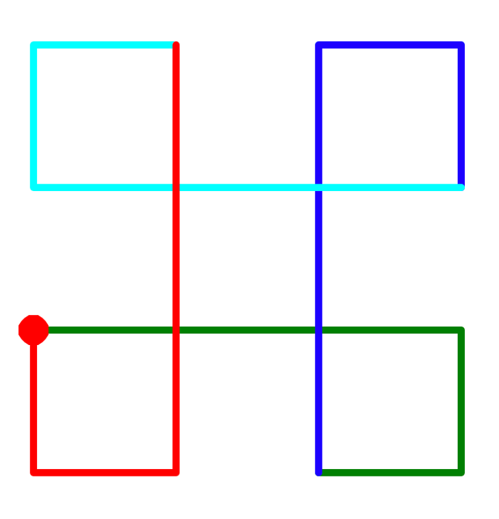
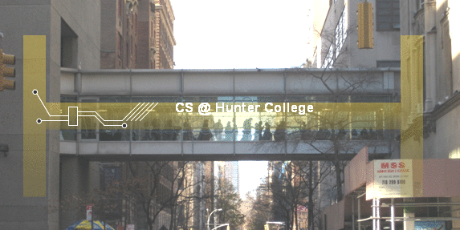

Homework Exercises
CSCI 127: Introduction to Computer Science
Hunter College, City University of New York
Spring 2026
All students registered by Friday, January 23, are sent a Gradescope registration invitation to the email on record on their Brightspace account. If you did not receive the email or would like to use a different account, fill in the form on Brightspace. Include that you not receive a Gradescope invitation, your preferred email, and your EmpID. We will manually generate an invitation. As a default, we use your name as it appears in Brightspace/CUNYFirst (to update CUNYFirst, see changing your personal information). If you prefer a different name for Gradescope, include it, and we will update the Gradescope registration.
General Notes
Learning programming is like learning a foreign language: you will learn more (with less work) if you practice every day. Some of the programs below are easy; some will take more time. We suggest you set aside a block of time most days to work on programming and the course.
The programs build on the concepts and code developed during lecture, lab, and through the reading. Mastery of material is assessed via
- Autograding of the programs submitted to Gradescope,
- The weekly written quizzes with questions about the programs you wrote and concepts from lecture and lab,
- The oral code reviews where, each week, you code a program in IDLE, and
- The paper final exam which covers all material from the semester.
Autograder Notes
The majority of the programs this semester are written in Python (see Lab 1 for getting started with Python); it is noted below when other formats or languages are used. For Python programs, the autograder expects a .py file, using only the specified libraries, and does not accept iPython/Jupyter notebooks. Since all assignments are designed to be uploaded as a single file, the autograder is set up for direct file upload instead of Github. If submitting directly (drop-and-drag onto the webpage), the file name is flexible but must have the extension .py, unless otherwise noted.
Also, to receive full credit, the code should be compatible with Python 3.10 (the default for the Gradescope autograders).
To get full credit for a program, the file must include in the opening comment:
- Your name, as it appears in your Gradescope registration.
- The email you are using for Gradescope.
For example, for the student, Thomas Hunter, his first program might be:
"""
Name: Thomas Hunter
Email: thomas.hunter1870@hunter.cuny.edu
Date: September 1, 2025
This program prints: Hello, Thomas Hunter
"""
print("Hello, Thomas Hunter")
For each program, the upper right hand side of the description contains the due date, suggested reading, and, when applicable, the available libraries. When testing your Python programs, the autograder uses Python 3.10 and has available the libraries listed. If the available libraries is none, no additional libraries are used (e.g. no import statement is needed in your program).
You may submit your assignments up to three weeks before the due date and are encouraged to work ahead. To receive credit, assignments must be submitted by the deadline to Gradescope. For more information on using Gradescope, see Lab 1. Since Gradescope gives limited feedback, run your program first locally (on your computer or a lab computer) where the compiler messages will pinpoint errors and help debug your code. For example, if Gradescope gives you a "The autograder failed to execute..." error, it means your program has an error (in this case, it's usually the file contains non-Python commands.). The local Python compiler will give the line of your file with the error, where Gradescope will only say that there's a general problem. For more information on installing Python on your computer, see the installation guides.
Homework Exercises
-
Due Date: 5pm, Friday, January 30
Reading: Chapter 1 & Lab 1
Available Libraries: noneHello
<p> Write a program that prints <code class="inline">Hello</code> followed by your name to the screen. For example, if your name is <code class="inline">Thomas Hunter</code>, when your program is run, it would print:Hello, Thomas Hunter -
Due Date: 5pm, Tuesday, February 3
Reading: Chapter 4 & Lab 1
Available Libraries: turtleTriangle
<p>Write a program that draws a triangle using the <code class="inline">turtle</code> library. <br><img id="triangle" alt="program 2" src="../images/p2_triangle.png" width="250"> <br><br> <i>Note: Whenever submitting a turtle program, <b>choose a name for your file that is not <tt>turtle.py</tt></b>. When executing the <code class="inline">import turtle</code> statement, the computer first looks in the folder where the file is saved for the turtle module and then in the libraries (and other places on the path). If you name your file <tt>turtle.py</tt>, it thinks the module is itself, causing all kinds of errors. To avoid this, name your program something like <tt>myTurtle.py</tt> or <tt>program2.py</tt>. </i></p></li> -
Due Date: 5pm, Wednesday, February 4
Reading: Chapter 4 & Lab 1
Available Libraries: turtleTurtle Drawing
<p><b>!!!! UPDATE !!!!</b></p> <p>Write a program that implements the incomplete code (start right from the red spot and return to there). The initial part of the code is provided if you like. The colors are green, blue, cyan, and red, respectively.</p> <pre><code class="python">"""Your Name Your Email """ import turtle
t = turtle.Turtle() t.pensize(5) t.shape("circle")
""" TODO: finish the rest of the program Hint: The distance for a long line is 300. The distance for a short line is 100. """
The result should look as follows:

-
Due Date: 5pm, Thursday, February 5
Reading: Chapter 1 & Lab 1
Available Libraries: noneMultiple Greetings
<p>Write a program that will print <tt>Welcome!</tt> multiple times. The number of times depends on your EmplID number. Take the last 2 digits of your EmplID number and add 10. For example, if your EmplID ends in 13, the number of times you repeat the message is 13+10 = 23. <p>For example, with an EmplID ending in 02, you would repeat the message 12 times:Welcome! Welcome! Welcome! Welcome! Welcome! Welcome! Welcome! Welcome! Welcome! Welcome! Welcome! Welcome! -
Due Date: 5pm, Friday, February 6
Reading: Chapter 4 & Lab 1
Available Libraries: turtleFlower
<p><b>!!!! UPDATE !!!!</b></p> <p>Write a program that implements the pseudocode ("informal high-level description of the operating principle of a computer program or other algorithm") below:</p> <pre><code class="shell">Change the pen to blue.Repeat 50 times: Repeat 5 times: Walk forward 100 steps.
Turn right 72 degrees. Turn right 70 degrees.<p>Your output should look like this: <br> <img height = 150 src="../images/flower_f25.png"> </p> -
Due Date: 5pm, Tuesday, February 10
Reading: Chapter 2 & Lab 2
Available Libraries: noneUpper & Lower
<p>Using the string commands introduced in <a href="lab2.html">Lab 2</a>, write a Python program that prompts the user for a message, and then prints the message, the message in lower case letters, and the message in upper case letters.</p> <p>A sample run of your program should look like:</p>Enter a message: Mihi cura futuri Mihi cura futuri mihi cura futuri MIHI CURA FUTURI<p>Another run:</p>Enter a message: I love Python! I love Python! i love python! I LOVE PYTHON!<p><i>Hint: Your program should be able to take any phrase the user enters and prints it, prints it in lower case letters, and prints it in upper case letters. To do that, you need to store the phrase in a variable and print variations of the stored variable. See "More Useful String Methods" in <a href="lab2.html">Lab 2</a>. </i> -
Due Date: 5pm, Wednesday, February 11
Reading: Chapter 2 & Lab 2
Available Libraries: noneLowercase ASCII
<p>Write a program that prompts the user to enter a phrase, converts the phrase to lowercase, and then prints out each lowercase character and its corresponding ASCII code.</p> <p>A sample run of your program should look like:</p>Enter a phrase: abc a 97 b 98 c 99<p>And another sample run:</p>Enter a phrase: ABC a 97 b 98 c 99<p>Another run, with a longer phrase:</p>Enter a phrase: I love Python! i 105 32 l 108 o 111 v 118 e 101 32 p 112 y 121 t 116 h 104 o 111 n 110 ! 33<p><i>Hint: The first step is to ask the user for input (see Section 2 of <a href="lab2.html">Lab 2</a>). If <tt>c</tt> is a character, <code class="inline">ord(c)</code> returns its ASCII code. For example, if <tt>c</tt> is 'i', then <code class="inline">ord(c)</code> returns 105. See <a href="lab2.html">Lab 2</a> for more on ASCII and characters.</i> </p> -
Due Date: 5pm, Friday, February 13
Reading: Chapter 2 & Lab 2
Available Libraries: noneCounting by 17's
<p><b>!!!! UPDATE !!!!</b></p> <p>Write a program that prints out the numbers from 850 to 1700, counting by seventeens.</p> <p>The output of your program should be:850 867 884 901 918 935 952 969 986 1003 1020 1037 1054 1071 1088 1105 1122 1139 1156 1173 1190 1207 1224 1241 1258 1275 1292 1309 1326 1343 1360 1377 1394 1411 1428 1445 1462 1479 1496 1513 1530 1547 1564 1581 1598 1615 1632 1649 1666 1683 1700 -
Due Date: 5pm, Wednesday, February 18
Reading: Chapter 4 & Lab 2
Available Libraries: turtleExpanding Hexadecagon
<p><b>!!!! UPDATE !!!!</b></p> <p>Write a program, using the turtle library, that implements the pseudocode below:</p> <pre><code class="shell">For i = 60, 62, 64, 66, ... ,110:Turn pen red. Walk forward i steps. Turn left 45 degrees. Turn pen blue. Walk forward i steps Turn right 90 degrees
<p>Your output should look similar to:</p> <br> <img src="../images/expanding_hexadecagon.png" height=250>Hint: See examples of
range(start,stop,step)in Section 4 of Lab 2. -
Due Date: 5pm, Thursday, February 19
Reading: Chapter 2 & Lab 2
Available Libraries: noneAcronyms
<p>Write a program that prompts the user for a phrase and creates an acronym, consisting of the first letters of each word, in uppercase.</p> <p>To approach a problem, it is useful to break it into steps:</p> <ol> <li>Prompt for a phrase & read it into a variable.</li> <li>Make the phrase upper case.</li> <li>Print the phrase.</li> <li>Split up the phrase into words.</li> <li>Take the first letter of each word (keep in mind that split() returns a list of the words ), concatenate and make an acronym of it.</li> <li>Print the acronym.</li> </ol> <p>Now translate the above pseudocode (informal but detailed description of the steps in a program) into python and test that your program works as follows:</p> <pre><code class="shell">Enter a phrase: City University New YorkYour phrase in capital letters: CITY UNIVERSITY NEW YORK Acronym: CUNY
<p>And another run:</p> <pre><code class="shell">Enter a phrase: Hunter CollegeYour phrase in capital letters: HUNTER COLLEGE Acronym: HC
<p> <i>Hint: See examples of looping throught strings in Section 4 of <a href="lab2.html">Lab 2</a>.</i>
-
Due Date: 5pm, Friday, February 20
Reading: Chapter 4 & Lab 3
Available Libraries: turtleShades of Blue
<p><b>!!!! UPDATE !!!! Pick a different color</b></p> <p>Modify the program from <a href="lab3.html">Lab 3</a> to show the shades of blue.</p> <p>Your output should look similar to:</p> <p> <img src="../images/shadesOfBlue.png" height="300"> </p> -
Due Date: 5pm, Tuesday, February 24
Reading: Chapter 2 & Lab 2
Available Libraries: noneWord Count
<p>Write a program that asks the user for a phrase, and prints out the number of words in the phrase. Your program should repeat this for 4 more phrases (a total of 5 phrases):</p> <p>The output of your program should be:Enter phrase: This is my letter to the World 7 Enter phrase: That never wrote to Me- 5 Enter phrase: The simple News that Nature told- 6 Enter phrase: With tender Majesty 3 Enter phrase: Emily Dickinson 2 -
Due Date: 5pm, Wednesday, February 25
Reading: Chapter 2, Chapter 4 & Lab 3
Available Libraries: turtleColor Stamps
<p> <p>Write a program that asks the user for a color in hexadecimal notation, moves a turtle forward 20 steps, and then stamps out a turtle shape that color. Your program should repeat this for 4 more colors in hexadecimal notation (a total of 5 turtle stamps and moves forward).</p> <p>For example, if you ran your program and the user entered:</p> <pre><code class="shell">Enter color (as hex): #0000FFEnter color (as hex): #0000B8 Enter color (as hex): #000087 Enter color (as hex): #000043 Enter color (as hex): #000011
<p>The output would be:</p> <p> <img src="../images/color_stamps_f25.png" height="200"> </p> -
Due Date: 5pm, Thursday, February 26
Reading: Section 2.8, Chapter 4, Lab 2 & Lab 4
Available Libraries: turtle<p><b>Turning Turtle</b></p>Write a program that asks the user for 5 whole (integer) numbers. For each number, turn the turtle left the degrees entered and then the turtle should move forward 100.
<p>A sample run of your program should look like: <pre><code class="datablock">Enter a number: 270Enter a number: 100 Enter a number: 190 Enter a number: 200 Enter a number: 80
<p>and the output should look similar to: <br> <img src="../images/5turns.png" style="padding:25px" height=200> -
Due Date: 5pm, Friday, February 27
Reading: Lecture 2 & Chapter 2
Available Libraries: none<p><b>Caesar Cipher</b></p> <!--f22, #9--> <p><img src = "../images/ciphrdsk.gif" height=200> <br><i>(The cipher disk above shifts 'A' to 'N', 'B' to 'O', ... 'Z' to 'M', or a shift of 13. <!-- Link/website broken: From <a href="http://www.secretcodebreaker.com/history2.html">secretcodebreaker.com</a>.--> From secretcodebreaker.com)</i></p><p>Write a program that prompts the user to enter a word and the amount to shift, and then prints out the word with each letter <b>shifted right</b> by that amount. For example, if the shift was 13 (as in the figure above), then, 'a' becomes 'n', 'b' becomes 'o', ... 'y' becomes 'l', and 'z' becomes 'm'. <p>Assume that all inputted words are in lower case letters: 'a',...,'z'. <p>A sample run of your program should look like:Enter an all-small-letter string: zebra Enter a non-negative int to shift: 13 Encoded string: mroen<p>Here is another sample run of your program. <pre><code class="text">Enter an all-small-letter string: owqfkaEnter a non-negative int to shift: 6 Encoded string: ucwlqg
<p> <i>Hint: See the example programs from Lecture 2.</i> </li>
-
Due Date: 5pm, Monday, March 2
Reading: Lecture 3, Section 9.7 & Lab 2
Available Libraries: noneSlicing Loop
Implement the following piece of pseudocode as a complete program: <pre>- Prompt the user to enter a string and call it s.
- Let ls be the length of s.
- For i in 0, 1, ..., ls-1:
- Print s[:i]
- For i in 0, 1, ..., ls-1:
- Print s[i:]
- Print a closing statement
A sample run of your program should look like:
Enter string: a man a plan a canal panamawhich would output:
a a a m a ma a man a man a man a a man a a man a p a man a pl a man a pla a man a plan a man a plan a man a plan a a man a plan a a man a plan a c a man a plan a ca a man a plan a can a man a plan a cana a man a plan a canal a man a plan a canal a man a plan a canal p a man a plan a canal pa a man a plan a canal pan a man a plan a canal pana a man a plan a canal panam a man a plan a canal panama man a plan a canal panama man a plan a canal panama an a plan a canal panama n a plan a canal panama a plan a canal panama a plan a canal panama plan a canal panama plan a canal panama lan a canal panama an a canal panama n a canal panama a canal panama a canal panama canal panama canal panama anal panama nal panama al panama l panama panama panama anama nama ama ma aThank you for using my program!
-
Due Date: 5pm, Tuesday, March 3
Reading: Chapter 2, Chapter 7 & Lab 4
Available Libraries: noneDNA
<p>We can store DNA sequences as strings. These strings are made up of the letters A, C, G, and T. For a given DNA string, the GC-content is the percent of the string that is C or G, written as a decimal.</p> <p> Write a program that prompts the user for a DNA string, and then prints the length and GC-content of that string.</p> <p>A sample run of the program: </p> <pre><code class="text">Enter a DNA string: ACGCCCGGGATGLength is 12 GC-content is 0.75
<p><i>Hint:</i> See <a href="lab4.html">Lab 4</a>. You can use a <tt>for</tt>-loop to go through each character in the string, and count each time you encounter a 'C' or 'G'. You can use an <tt>if</tt>-statment to check what kind of character the loop is currently on. Alternatively, you can use the <tt>count()</tt> method introduced in Lab 2 to get the total occurrences of 'C' and 'G' in the string.
Due Date: 5pm, Wednesday, March 4
Reading: Lab 4 & Numpy Tutorial
Available Libraries: matplotlib, numpyGrayscale Image
<p><b>!!!! UPDATE !!!! Move after logo program.</b></p> <p>Write a program that asks the user for a name of an image .png file and the name of an output file. The program then converts the image to grayscale and saves the grayscale image to the specified output file.</p> <p>There are many ways to convert color images to grayscale (see <a href="https://tannerhelland.com/2011/10/01/grayscale-image-algorithm-vb6.html">Grayscale Algorithms</a> for a nice overview).</p> For this program, we are setting each channel of a pixel to its green value. That is, your program should then set the red channel values to the green channel values, as well as the blue channel values to the green channel values. For example, a single pixel at <code>(i,j)</code> of the image <code>img</code> would be changed to: <pre><code class="python">img[i,j,0] = img[i,j,1] #change value of red channel to value of green channelimg[i,j,2] = img[i,j,1] #change value of blue channel to value of green channel
<p> A sample run of your program should look like:Enter name of the input file: csBridge.png Enter name of the output file: gray_bridge.pngThe sample input file and the resulting grayscale image:


<p> Note: before submitting your program for grading, remove the commands that show the image (i.e. the ones that pop up the graphics window with the image). The program is graded on a server on the cloud and does not have a graphics window, so, the <code>plt.show()</code> and <code>plt.imshow()</code> commands will give an error. Instead, the files your program produces are compared pixel-by-pixel to the answer to check for correctness. <p> <i>Hint: See <a href="lab3.html">Lab 3</a>. Think about how you can uses numpy slices to change every pixel.</p></i>-
Due Date: 5pm, Thursday, March 5
Reading: Section 8.11, Lab 4 & Numpy Tutorial
Available Libraries: matplotlib, numpyTopographic Map
<p><b>!!!! UPDATE !!!! Move earlier-- change original program to just make the coastline outline black</b></p> <p> Modify the map-making program from <a href="lab4.html">Lab 4</a> to create a topographic map (highlighting the points that have elevations that are multiples of 10) and the coastline. Your program should ask the user for the amount of intensity (a floating point number between 0.0 and 1.0), the name of the output image, and create a new image with that name and with the pixels colored as follows: </p><ul> <li> If the elevation is less than or equal to 0, the pixel should be colored blue (0% red, 0% green, and 100% blue).</li> <li>If the elevation is not 0 but divisible by 10, color the pixel gray (<tt>amt</tt> red, <tt>amt</tt> green, and <tt>amt</tt> blue) where <tt>amt</tt> is the amount of intensity entered by the user.</li> </li> Otherwise, the pixel should be colored white (100% red, 100% green, and 100% blue).</li> </ul>A sample run of your program should look like:
What intensity for the topo lines: 0.5 What is the output file: med_topo.png Thank you for using my program! Your map is stored med_gray_topo.png.Your resulting map should look like:

and be saved to a file called med_gray_topo.png.
<p>Another run with darker lines: <pre><code class="text">What intensity for the topo lines: 0.0What is the output file: dark_lines_topo.png Thank you for using my program! Your map is stored dark_lines_topo.png.
Your resulting map should look like:
and be saved to a file called dark_lines_topo.png.
</p><p> Note: before submitting your program for grading, remove the commands that show the image (i.e. the ones that pop up the graphics window with the image). The program is graded on a server on the cloud and does not have a graphics window, so, the <code>plt.show()</code> and <code>plt.imshow()</code> commands will give an error. Instead, the files your program produces are compared pixel-by-pixel to the answer to check for correctness.</p> -
Due Date: 5pm, Friday, March 6
Reading: Section 10.23, Chapter 4 & Lab 4
Available Libraries: noneTwo-Part Numbers
<p>Write a program that identifies all two-part numbers from a string and returns a list of those numbers. In the input string, each number is separated by a comma followed by a space: ', ', and two-part numbers contain a '-'. </p> <p>For example, if you ran your program and the user entered:</p> <pre><code class="text">Enter numbers, separated by commas: twenty, four, thirty-one, sixty-six, eightA list of the two-part numbers: ["thirty-one", "sixty-six"]
<p>Hint: See Section 4 in <a href="lab4.html">Lab 4</a>.</p> -
Due Date: 5pm, Monday, March 9
Reading: Section 8.11, Lab 4 & Numpy Tutorial
Available Libraries: numpy, matplotlibLogo
<p><b>Move before other image hw.</b></p> <p>Write a program that creates a 'U' logo for university on a 30x30 grid. Your program should ask the user for the red, green, and blue for the color of their logo, and the file to save the image.</p><p>A sample run using <a href="https://www.cuny.edu/wp-content/uploads/sites/4/page-assets/about/administration/offices/communications-marketing/services/marketing/campus-identity/HC-Visual-Identity-Standards_2016.pdf">Hunter College Purple (Pantone 267)</a>:</p> <pre><code class="text">Enter amount of red: 0.373Enter amount of green: 0.145 Enter amount of blue: 0.624 Enter file name: hunterPurple_U.png
The resulting file is:</p><p> The grading script is expecting: </p><ul> <li>The grid to be 30 x 30.</li> <li> The color of the 'U' is the amount of red, blue, and green specified, as a value between 0 and 1.0. </li> <li> The left side of the 'U' should be the left third of the image; the bottom part of the 'U' should be the bottom third of the image; and the right part of the 'U' should be the the right third of the image. </li><li> The remaining pixels in the image should be white (100% red, 100% green, and 100% blue). </li></ul> <p> Note: before submitting your program for grading, remove the commands that show the image (i.e. the ones that pop up the graphics window with the image). The program is graded on a server on the cloud and does not have a graphics window, so, the <code>plt.show()</code> and <code>plt.imshow()</code> commands will give an error. Instead, the files your program produces are compared pixel-by-pixel to the answer to check for correctness. </p> -
Due Date: 5pm, Tuesday, March 10
Reading: Burch's Logic & Circuits & Lab 5
Available Libraries: N/ANAND Circuit
<p><b>!!!! UPDATE !!!!</b></p> <p>Build a circuit that has the same behavior as a <tt>nand</tt> gate (i.e. for the same inputs, gives identical output) using only <tt>and</tt>, <tt>or</tt>, and <tt>not</tt> gates.</p> <p> <img src="../images/nandGate.png" width=300> </p> <p>Save your expression to a text file. See <a href="lab5.html">Lab 5</a> for the format for submitting logical expressions to Gradescope. </p> -
Due Date: 5pm, Wednesday, March 11
Reading: Burch's Logic & Circuits & Lab 5
Available Libraries: N/AMajority Circuit
<p>Write a logical expression that is equivalent to the circuit that computes the majority of 3 inputs, called <tt>in1</tt>, <tt>in2</tt>, <tt>in3</tt>: <ul> <li> If two or more of the inputs are <tt>True</tt>, then your expression should evaluate to <tt>True</tt>. <li> Otherwise (two or more of the inputs are <tt>False</tt>), then your expression should evaluate to <tt>False</tt>. </ul> <p> <img src="../images/maj7.png" width=300> <p>Save your expression to a text file. See <a href="lab5.html">Lab 5</a> for the format for submitting logical expressions to Gradescope. </p> <p><i>Hint: See <a href="lab5.html">Lab 5</a>.</i></it></p> -
Due Date: 5pm, Thursday, March 12
Reading: Chapter 7, Chapter 11, & Lab 4
Available Libraries: turtleTurtle String
​ -
Due Date: 5pm, Friday, March 13
Reading: Burch's Logic & Circuits & Lab 5
Available Libraries: N/ABinary Number Incrementer
<p> Logical gates can be used to do arithmetic on binary numbers. For example, we can write a logical circuit whose output is one more than the inputted number. Our inputs are <tt>in1</tt> and <tt>in2</tt> and the outputs are stored in <tt>out1</tt>, <tt>out2</tt>, and <tt>out3</tt>. <p> <img src="../images/PROBLEM37.png" height=300 ><br> <p>Here is a table of the inputs and outputs: <table border="1px"> <tr> <th colspan=3>Inputs</th><th colspan=4>Outputs</th> </tr> <tr> <th>Decimal<br>Number</th><th>in1</th><th>in2</th><th>Decimal<br>Number</th><th>out1</th><th>out2</th><th>out3</th> </tr> <tr> <td>0</td><td>0</td><td>0</td> <td>1</td><td>0</td><td>0</td><td>1</td> </tr> <tr> <td>1</td><td>0</td><td>1</td> <td>2</td><td>0</td><td>1</td><td>0</td> </tr> <tr> <td>2</td><td>1</td><td>0</td> <td>3</td><td>0</td><td>1</td><td>1</td> </tr> <tr> <td>3</td><td>1</td><td>1</td> <td>4</td><td>1</td><td>0</td><td>0</td> </tr> </table> <p>Submit a text file with each of the outputs on a separate line: <pre style = "background-color:lavender;width:500px">""" Name: YourNameHere Date: March 2025 Logical expressions for a 4-bit incrementer """
out1 = ... out2 = ... out3 = ... Where "..." is replaced by your logical expression (see Lab 5 for hints and formatting help).
<p>Note: here's a quick <a href="https://www.mathsisfun.com/binary-number-system.html">review</a> of binary numbers. </li>
-
Due Date: 5pm, Monday, March 16
Reading: Lecture 4, Lab 4
Available Libraries: none<p><b>Fares by Time</b></p> <p><b>!!!! UPDATE !!!!</b></p> <p>Write a program that will ask for the time in 24 hour format (e.g. <tt>2034</tt> is 8:34pm) and, prints out: <ul> <li><tt>"Peak Fare (Morning Rush)"</tt> if the time is between 6am (e.g. <tt>600</tt>) and 10am (e.g. <tt>1000</tt>), inclusive,</li> <li><tt>"Peak Fare (Evening Rush)"</tt> if the time is between 4pm (e.g. <tt>1600</tt>) and 8pm (e.g. <tt>2000</tt>), inclusive, and</li> <li><tt>"Non-Peak Fare"</tt> otherwise.</li> </ul> <p>A sample run: <pre><code class="text">Enter time: 1750Peak Fare (Evening Rush)
<p>Note: "Inclusive" for a range of numbers means that it includes the endpoints. For example, "between 4 and 8, inclusive" means all values that are greater than or equal to 4 and are also less than or equal to 8.</p> -
Due Date: 5pm, Tuesday, March 17
Reading: 10-mins to Pandas, DC Pandas, Lab 6
Available Libraries: pandas<p><b>Minimal Temperatures</b></p> <p>In <a href="lab6.html">Lab 6</a>, we wrote a program that computed the average rainfall from Australian weather data. Modify the program to ask the user for the name of a CSV file and then to print out, using the data from the CSV file:</p> <ul> <li>The lowest temperature recorded across all locations and dates.</li> <li>The lowest temperature for each location across all dates.</li> </ul> <p>For example, running the program on <a href="../files/rain_A.csv">rain_A.csv</a> (a smaller version of the CSV file from the lab that's contains only the cities that start with 'A'):</p> <pre><code class="shell">Enter CSV file name: rain_A.csvOverall min temp: -5.2
Minimum temperature by location: Location Adelaide 0.7 Albany 1.8 Albury -2.8 AliceSprings -5.2
-
Due Date: 5pm, Wednesday, March 18
Reading: 10-mins to Pandas, DC Pandas, Lab 6
Available Libraries: pandas<p><b>Triple Recipe</b></p> <p><b>!!!! UPDATE !!!!</b></p> <p> Using <tt>pandas</tt>, write a program that asks the user for a recipe (in comma separated value (CSV) format), reads in the corresponding CSV file and prints out quantities and ingredients needed to make a triple batch. Assume that the CSV files have the columns: <tt>"Amount"</tt>, <tt>"Measurement"</tt>, and <tt>"Ingredient"</tt>.For example if the CSV file, meringues.csv, contained:
Amount Measurement Ingredient 150 grams chocolate chips 4 whites of eggs .25 teaspoon vanilla .25 teaspoon cream of tartar A sample run of your program would be:
Enter recipe name: meringues.csv Double your recipe is: Amount Measurement Ingredient 0 450.0 grams chocolate chips 1 12.0 whites of eggs 2 0.75 teaspoon vanilla 3 0.75 teaspoon cream of tartar<p style="float:right;margin-left:10pt"><b>Due Date: 5pm, Thursday, March 19</b><br> <b>Reading: <a href="https://guides.github.com/activities/hello-world/">GitHub Guide</a>, <a href="lab6.html">Lab 6</a> </b><br> <b>Available Libraries: N/A</b></p> <p><b>GitHub</b></p><p>In <a href="lab6.html">Lab 6</a>, you created a GitHub account. Submit a text file with the name of your account. The grading script is expecting a file with the format: <pre><code class="shell">"""Name: Your_name Email: Your_eamil Account name for my GitHub account """"
AccountNameGoesHere
<p>Note: it takes a few minutes for a newly created GitHub account to be visible. If you submit to Gradescope and get a message that the account doesn't exist, wait a few minutes and try again. </p> </li>Due Date: 5pm, Monday, March 23
Reading: Lab 6, Ubuntu Terminal
Available Libraries: N/AHello (Shell Script)
<p>Write a shell script that prints <tt>Hello, Shell</tt> to the screen.</p> <p>Submit a single text file containing your Unix shell commands. See <a href="lab6.html">Lab 6</a> for details.</p> <p>Note: for comments, shell scripts use # in front of lines (instead of the block comments surrounded by """ """) and the first line is the "shebang" line. For a proper shell script, your file should start: </p> <pre><code class="shell">#!/bin/bash#Name: YourNameHere #Email: YourEmailHere
Due Date: 5pm, Tuesday, March 24
<b>Reading: <a href="lab7.html">Lab 7</a> & <a href="https://runestone.academy/ns/books/published/thinkcspy/Functions/mainfunction.html">Section 6.8</a></b><br> <b>Available Libraries: <i>none</i></b></p> <p><b>Hello Two Ways</b></p><p>Write a Python program that contains a function called, <tt>main()</tt>. Your function should print out a greeting to you by name. For example, if your name is Thomas Hunter, invoking <tt>main()</tt> would print:</p> <pre><code class="text">Hello, Thomas Hunter</code></pre> <p>You should use conditional execution, so your file can be run as a standalone program or imported so the function can be used elsewhere.</p> <p>To test your program, we will run it two ways:</p> <ol> <li>We will run it as a stand-alone program and see that it outputs the greeting. If your program is called, <code>student.py</code>, then we would run it, <code>python3 student.py</code>, to see that it prints the greeting.</li> <li>We will import your file and directly call the function. If your program is called, <code>student.py</code>, we would import it into a Python program, <code>import student</code>, and in that program, call your function, <code>student.main()</code>, to see that it prints the greeting. </li> </ol> <p><i>Hint: See Section 4 of <a href="lab7.html">Lab 7</a> for details on conditional execution.</i></p> </li>Due Date: 5pm, Wednesday, March 25
<b>Reading: Think CS <a href="https://runestone.academy/ns/books/published/thinkcspy/Functions/toctree.html">Chapter 6</a>, <a href="https://runestone.academy/ns/books/published/thinkcspy/Selection/toctree.html" target="_blank">Chapter 7</a>, <a href="lab4.html">Lab 4</a> & <a href="https://www.datacamp.com/tutorial/python-numpy-tutorial">Numpy Tutorial</a></b><br> <b>Available Libraries: matplotlib, numpy</b></p> <p><b>Image Shrinking</b></p><p><b>!!!! UPDATE !!!!</b></p> <!-- Tie this in to lecture: do stripes, & give a grid and average values--> <p> Write a function <tt>shrink()</tt> that takes a numpy array that contains an image and returns an image that is half the width and half the length. The returned image should have every other pixel of the inputted image, starting from the upper left corner. </p> <p>For example, using the file <href="../images/csBridge.png">csBridge.png</href> as the input file, the following code, using your function: <pre><code class="python">bridge_img = plt.imread('csBridge.png')small_bridge = shrink(bridge_img) plt.imsave('small_bridge.png',small_bridge)
<p>The resulting image is:</p> <p><img src="../images/small_bridge.png"></p> <p>Another example, this time, repeatedly applying our function to the <href="../images/Octocat.png">Octocat.png</href></p>#Vanishing cat... cat_img = plt.imread('Octocat.png') for i in range(5): cat_img = shrink(cat_img) file_name = 'cat'+str(i)+'.png' plt.imsave(file_name,cat_img)which would have as input and outputs, preserving relative size:

If we look at them all at the same scale, we can see the taking every other pixel (repeatedly) loses definition:
Note: before submitting your program for grading, remove any commands that show the image (i.e. the ones that pop up the graphics window with the image). The program is graded on a server on the cloud and does not have a graphics window, so, the
plt.show()andplt.imshow()commands will give an error. Instead, the files your program produces are compared pixel-by-pixel to the answer to check for correctness.Due Date: 5pm, Thursday, March 26
Reading: Section 7.4, Lab 4 and Lab 7
Available Libraries: noneNumber to String
<p>Write the function <tt>string2num()</tt> which takes a string and returns the corresponding number as an integer.</p> <ol> <li>If user gives a string that does not correspond to a number between 1 and 99, your function should return: -1.</li> <li>Numbers larger than 20 are separated by a space. For example, "twenty one" or "ninety nine".</li> </ol> </p> <p>A sample call of the function: <pre><code class="python">print("Converting fourteen to", string2num("fourteen"))</code></pre> <p>would print:</p> <pre><code class="text">Converting fourteen to 14</code></pre>And another example call of the function:
num_str = "sixty six" print("Converting", num_str, "to", string2num(num_str))would print:
Converting sixty six to 66<p>Note: The grading script does not run the whole program, but instead tests your function separately ('unit tests') to determine correctness. As such, the function name must match exactly (else, the scripts cannot find it). Before submitting your program for grading, remove any commands that are outside a function definition. To test the function you wrote, we import your file and then call the function directly. Code outside of function definitions will give compilation errors and prevents the tests from completing (giving a grade of 0). If you have extra code for testing and such, either comment it out before submitting, or use conditional execution (see <a href="lab7.html">Lab 7</a>).</p> <p><i>Hint: See Lecture 8 for related programs.</i></p>Due Date: 5pm, Friday, March 27
Reading: Section 6.8, Section 7.4 & Lab 7
Available Libraries: noneURL Domains
<p><b>!!!! UPDATE !!!!</b></p> <p> Write a program, using function <tt>main()</tt> that input a website URL like <tt>www.apple.com</tt> or <tt>hunter.edu</tt>. Find out the website name and its top level domain type. If top level domain is <tt>com</tt>, print "commercial", otherwise, if top level domain is <tt>edu</tt>, print "education", otherwise, if top level domain is <tt>org</tt>, print "organization", otherwise, if top level domain is <tt>gov</tt>, print "government", otherwise, print "other". See <a href="lab7.html">Lab 7</a>.A sample input/output is as follows.
Enter a website URL: chat.openai.com website name: openai commercialAnother sample input/output is as follows.
Enter a website URL: hunter.edu website name: hunter educationYet another sample input/output using the air force website as an example.
Enter a website URL: www.af.mil website name: af otherHint: You may need to consider a website can be in either form: www.websiteName.com or websiteName.com, so use the negative index (e.g. count from the end, instead of the beginning) to extract website or domain after split by '.'.
Due Date: 5pm, Monday, March 30
Reading: 10-mins to Pandas, DC Pandas, Lab 7
Available Libraries: pandas<p><b>Ticket Binning</b></p> <p><b>!!!! UPDATE !!!! Move earlier</b></p> <p> Modify the parking ticket program from <a href="lab7.html">Lab 7</a> to do the following: </p><ul> <li> Ask the user for the name of the input file. </li><li> Ask the user for the attribute (column header) to search by. </li></ul> <p>A sample run: </p><pre><code class="shell">Enter file name: Parking_Violations_Jan_2016.csvEnter attribute: Vehicle Color The 10 worst offenders are: WHITE 2801 WH 2695 GY 1420 BK 1153 BLACK 1054 BROWN 727 BL 656 GREY 574 SILVE 450 BLUE 412 Name: Vehicle Color, dtype: int64
<p>And another run:Enter file name: Parking_Violations_Jan_2016.csv Enter attribute: Vehicle Year The 10 worst offenders are: 0 3927 2015 1265 2014 1143 2013 1105 2012 772 2011 666 2007 643 2008 559 2010 509 2006 499 Name: Vehicle Year, dtype: int64
Due Date: 5pm, Friday, April 10
Reading: Think CS Chapter 6, Lab 4, Lab 8, & Numpy Tutorial
Available Libraries: matplotlib, numpyAveraging Images
<p>Fill in the missing functions: </p><ul> <li> <tt>average(region):</tt> Takes a region of an image and returns the average red, green, and blue values across the region. </li><li> <tt>setRegion(region,r,g,b):</tt> Takes a region of an image and red, green, and blue values, r, g, b. Sets the region so that all points have red values of r, green values of g, and blue values of b. </li></ul> <p> The functions are part of a program that averages smaller and smaller regions of an image until the underlying scene is visible (inspired by the elegant <a href="http://koalastothemax.com">koalas to the max</a>). </p><p>For example, if you inputted our favorite image, you would see (left to right): </p><p> <img src="../images/refined1.png" width="150"> <img src="../images/refined2.png" width="150"> <img src="../images/refined3.png" width="150"> <img src="../images/refined4.png" width="150"> <img src="../images/refined5.png" width="150"> <img src="../images/refined6.png" width="150"> <img src="../images/refined7.png" width="150"> <img src="../images/refined8.png" width="150">and finally:
</p><p> <img src="../images/csBridge.png" width="400"> </p><p>A template program, <tt>averageImage.py</tt>, is available <a href="https://github.com/stjohn/csci127">here</a>. You should use this file to get started with your program.</p> <p>The grading script does not run the whole program, but instead runs each of your functions separately ('unit tests') to determine correctness. As such, the names of the functions must match exactly the ones listed above (else, the scripts cannot find them).</p>Due Date: 5pm, Monday, April 13
Reading: 10-mins to Pandas, DC Pandas, Lab 7
Available Libraries: pandas, matplotlib<p><b>School Enrollment</b></p> <p><b>!!!! UPDATE !!!!</b></p> <p> Download csv file from <a href="../files/demo_boro.csv">2013 to 2018 Demographic Snapshot Borough</a>. Your program should ask the user for the borough, an name for the output file, and then display the fraction of Grade K to 6 enrollment that has lived in that borough, over time. Then print out the minimum, maximum, median, mean, and standard deviation of total enrollment in that borough (round to 3 decimal numbers). <p> A sample run of the program:Enter borough name: Bronx Enter output file name: bronxFraction.png minimum of total enrollment for Bronx is 233588 maximum of total enrollment for Bronx is 241986 median of total enrollment for Bronx is 239955.0 mean of total enrollment for Bronx is 239283.0 stand deviation of total enrollment for Bronx is 3407.191<p> The file <tt>bronxFraction.png</tt>: <p><img src="../images/bronxFraction_s23.png" width=300>Hint: First create a column that calculates the fraction of Grade K to 6 vs. Total Enrollment. Then get borough data using either
groupbyandget_groupfunction or query method. You can test both approaches. Suppose the original data frame is saved in variable df and the input borough name is put in variable borough.borough_data = df.query("Borough == '" + borough + "'")Then borough_data has data for the specific borough. Plot fraction using this data.
Note: before submitting your program for grading, remove the commands that show the image (i.e. the ones that pop up the graphics window with the image). The program is graded on a server on the cloud and does not have a graphics window, so, the
plt.show()andplt.imshow()commands will give an error. Instead, the files your program produces are compared pixel-by-pixel to the answer to check for correctness.Due Date: 5pm, Tuesday, April 14
Reading: Think CS Chapter 6 & Lab 8
Available Libraries: turtle<p><b>Polygons</b></p> <p> Write function <tt>polygon</tt>, which takes four parameters: a turtle, number of edges, edge length, and color as a string. The functionality of <tt>polygon</tt> uses turtle object to draw a polygon with <tt>number of edges</tt>, each edge has <tt>edge length</tt>, the polygon is in <tt>color</tt>, where color can be specified in name like "red" or using a hexadecimal representation such as "#00ffff" (green + blue = cyan). <p>The code of function <tt>main</tt> to test <tt>polygon</tt> is as follows:def main(): tess = turtle.Turtle() polygon(tess, 5, 100, "green") polygon(tess, 6, 60, "#ff00ff") polygon(tess, 7, 70, "#ff0000") turtle.done()if name == 'main': main()
The above <tt>main</tt> function produces the following figure. <p><img height=200 src="../images/pentagon_hexagon_heptagon.png"> <p><i>Hint: See Lecture 1 for the general recipe for drawing polygons.</i></p>Due Date: 5pm, Wednesday , April 15
Reading: Chapter 12 & Lab 8
Available Libraries: none<p><b>Unique Entries</b></p><p>When students visit the lab, their EmpID is stored as an 8-digit string. Many students visit multiple times, but we are interested in the total number of unique visitors to the lab. Write a function <tt>unique_visitors()</tt> that takes a list of 8-digit strings and returns the number of unique strings that occur.</p> <p>For example:</p> <pre><code class="python">ids = ['12345678','11223344','12312323','12345678']print("The number of unique visitors is ", unique_visitors(ids)) would print:
The number of unique visitors is 3since there are 4 entries but the first and fourth entries are duplicates of each other. <p>Note: The grading script does not run the whole program, but instead tests your function separately ('unit tests') to determine correctness. As such, the function name must match exactly (else, the scripts cannot find it). Before submitting your program for grading, remove any commands that are outside a function definition. To test the function you wrote, we import your file and then call the function directly. Code outside of function definitions will give compilation errors and prevents the tests from completing (giving a grade of 0). If you have extra code for testing and such, either comment it out before submitting, or use conditional execution (see <a href="lab7.html">Lab 7</a>).</p> <p><i>Hint: Use a dictionary to store the IDs and return the length of the dictionary.</i></p>Due Date: 5pm, Thursday , April 16
Reading: Chapter 12 & Lab 8
Available Libraries: noneMost Common Word
<p>Write a function <tt>most_common()</tt> that takes a string and returns the word that occurs most often. You may assume that:</p> <ul> <li>There is exactly one word that occurs most often.</li> <li>All punctuation has been removed and words are separated by spaces (' ') and all letters are lower-case.</li> </ul>For example:
phrase = "MORE: The more that you read, the more things you will know. The more that you learn, the more places you'll go. --Dr. Seuss" phrase = phrase.lower() punctuation_list = ['.',',','!','?',':',';','\n','\t','-',' '] for pun in punctuation_list: phrase = phrase.replace(pun,' ') print('Phrase unpunctuated:', phrase) print('Most common word:', most_common(phrase))would print:
Phrase unpunctuated: more the more that you read the more things you will know the more that you learn the more places you'll go dr seuss Most common word: moresince 'more' occurs five times in the phrase, more than any other.
Note: The grading script does not run the whole program, but instead tests your function separately ('unit tests') to determine correctness. As such, the function name must match exactly (else, the scripts cannot find it). Before submitting your program for grading, remove any commands that are outside a function definition. To test the function you wrote, we import your file and then call the function directly. Code outside of function definitions will give compilation errors and prevents the tests from completing (giving a grade of 0). If you have extra code for testing and such, either comment it out before submitting, or use conditional execution (see Lab 7).
Hint: Use a dictionary to count how many times you see each name. When you add a name to the dictionary a second time, also append the name to a list of duplicated names.
Due Date: 5pm, Friday, April 17
Reading: Think CS Chapter 6 & Lab 8
Available Libraries: turtleTree Drawing
<p> Write the function <code class="inline">draw_tree()</code> that implements the pseudocode below, using the turtle library:Function draw_tree() Inputs: a turtle, the branch length, the leaf color and the trunk color
Change the color to the trunk color.
If branch length <= 20
Change the color to leaf color.
Move forward the branch length.
Move backward the branch length.
Change the color to trunk color.
Else:
Move forward 80% of the branch length.
Turn 30 degrees to the left.
Call the function with 80% of the branch length, and the same turtle & colors.
Turn 60 degrees to the right.
Call the function with 80% of the branch length, and the same turtle & colors.
Turn 30 degrees to the left.
Move backward 80% of the branch length.
For example:
tess = turtle.Turtle() tess.left(90) tess.pensize(2) draw_tree(tess,50,"green","brown")<p>will draw:</p>
While increasing the starting branch length and changing the branch and trunk colors:
tess = turtle.Turtle() tess.left(90) tess.pensize(2) draw_tree(tess,100,"indigo","black")<p>will draw:</p><p>The grading script does not run the whole program, but instead tests your function separately ('unit tests') to determine correctness. As such, the function name and input parameter order must match exactly (else, the scripts cannot find it).</p> <p><i>Hint: See Section 4 of <a href="lab7.html">Lab 7</a> for details on conditional execution.</i></p>Due Date: 5pm, Monday, April 20
Reading: Lab 9
Available Libraries: noneFinding Errors
<br><br><br> <p><b>!!!! UPDATE !!!!</b></p> <p> <a href="lab9.html">Lab 9</a> works through finding and fixing errors in a Python program. Fix all of the errors in the file <tt><a href="https://github.com/stjohn/csci127/blob/master/errorsHex.py">errorsHex.py</a></tt> and then upload the file to Gradescope.</p> <br><br> <p></p>Due Date: 5pm, Tuesday, April 21
Reading: Think CS Chapter 6 & Lab 9
Available Libraries: turtle, pandasHurricane Tracker
<p><img src="../images/irmaScreenshot.png" width="400"><p>This program asks that you fill in the missing function to animate hurricane data (inspired by the 2018 <a href="http://nifty.stanford.edu/2018/ventura-hurricane-tracker/nifty-hurricanes.html">Nifty Hurricane Program</a> by Phil Ventura). Your function, <tt>animate(t,lat,lon,wind)</tt> takes as input: </p><ul> <li> <tt>t</tt>: a turtle, </li><li> <tt>lat</tt>: an integer storing the current latitude, </li><li> <tt>lon</tt>: an integer storing the current longitude, and </li><li> <tt>wind</tt>: the current wind speed in miles per hour. </li></ul> <p> Your function should move to the turtle to the current location (longitude, latitude), and then based on the <a href="https://www.nhc.noaa.gov/aboutsshws.php">Saffir-Simpson Hurricane Wind Scale</a>, change the turtle to be: </p><ul> <li> red and pen size 5 for Category 5 (windspeed > 157 mph) </li><li> orange and pen size 4 for Category 4 (windspeed in 130-156 mph) </li><li> yellow and pen size 3 for Category 3 (windspeed in 111-129 mph) </li><li> green and pen size 2 for Category 2 (windspeed in 96-110 mph) </li><li> blue and pen size 1 for Category 1 (windspeed in 74-95 mph) </li><li> white and pen size 1 if not hurricane strength </li></ul> <p>Download the template program, <a href="https://github.com/stjohn/csci127/blob/master/hurricane.py">hurricane.py</a>. You will also need to download the background image, <tt>mapNASA.gif</tt> (<a href="https://github.com/stjohn/csci127/blob/master/mapNASA.gif">link here</a>), and put it in the same directory as <tt>hurricane.py</tt>.</p> <p>The grading script does not run the whole program, but instead runs each of your functions separately ('unit tests') to determine correctness. As such, the names of the functions must match exactly the ones listed above (else, the scripts cannot find them). </p><p>Two test files (<a href="../files/irma.csv">irma.csv</a> and <a href="../files/jose.csv">jose.csv</a>) are from the <a href="https://nifty.stanford.edu/2018/ventura-hurricane-tracker/nifty-hurricanes.html">Nifty site</a>. Additional CSV files are available there. </p><p> <i>Hint: You may find the following turtle commands useful: <tt>color()</tt>, <tt>goto()</tt>, and <tt>pensize()</tt>.</i> </p></li>Due Date: 5pm, Thursday, April 23
Reading: 10-mins to Pandas,
DC Pandas, Plotly Maps, Lab 9
Available Libraries: pandas, plotlyCollisions Map
<p><b>!!!! UPDATE !!!!</b></p> <p> Using <a href="https://plotly.com/python/maps/">Plotly Express</a> (see <a href="lab9.html">Lab 9</a>), write a program that asks the user for the name of a CSV file, name of the output file, and creates a map with markers for all the traffic collisions from the input file. When the user hovers over the marker, the time of the accident should appear in the pop-up box. <p>A sample run:Enter CSV file name: collisions.csv Enter output file: myMap.html<p>which would produce the HTML file: <p><iframe src="../files/th_px.html" width="600" height="400" frameborder="1" marginwidth="0" marginheight="0" allowfullscreen></iframe> <p>This assignment uses collision data collected and made publicly by New York City Open Data. A sample file, <a href="../files/collisionsThHunterBday.csv">collisionsThHunterBday.csv</a> from 18 October 2016 was downloaded and can be used to test your program.</p> <p> When running your program locally, you need to check that the "LATITUDE" and "LONGITUDE" values are non-empty. You can drop any row where there's empty values with: <pre><code class="python">df_cleaned = df.dropna()</code></pre> <p><i>Note: For this data set, the names of the columns are "LATITUDE" and "LONGITUDE" (unlike the previous maps from the lab, where the data was stored with "Latitude" and "Longitude"). </i>Due Date: 5pm, Friday, April 24
Reading: 10-mins to Pandas, DC Pandas, Lab 6 & 8
Available Libraries: pandasAddress DataFrame
Write a function, make_addr_df() that has 3 input parameters:
- last_names: a string containing last names, separated by spaces,
- first_names: a string containing first names, separated by spaces,
- emails: a string containing emails, separated by spaces,
For example:
hc_last = "Hunter Raab Kirschner Cantor" hc_first = "Thomas Jennifer Anne Nancy" hc_email = "th1870@hunter.cuny.edu jr2001@hunter.cuny.edu ak2023@hunter.cuny.edu nc2024@hunter.cuny.edu" print(make_addr_df(hc_last, hc_first, hc_email))
<p>will output:</p>Last First emails 0 Hunter Thomas th1870@hunter.cuny.edu 1 Raab Jennifer jr2001@hunter.cuny.edu 2 Kirschner Anne ak2023@hunter.cuny.edu 3 Cantor Nancy nc2024@hunter.cuny.edu
<p>The grading script does not run the whole program, but instead runs your function separately ('unit tests') to determine correctness. As such, the name of the functions must match exactly the one listed above (else, the scripts cannot find it).</p> <p><i>Hint: Use <tt>split()</tt> to create lists of each category entered. See <a href="lab8.html">Lab 8</a> for creating dataframes with dictionaries. </i></p>
Due Date: 5pm, Monday, April 27
Reading: Think CS: Chapter 8 & Lab 10
Available Libraries: randomRandom Walk
<p> Modify the program from <a href="lab10.html">Lab 10</a> that makes a turtle walk 250 times. Each "walk" is 5 steps forward and the turtle can turn 0,45,90,135,...330,345 degrees (chosen randomly) at the beginning of each walk. <p> A sample run of your program:
Due Date: 5pm, Tuesday, April 28
Reading: Think CS: Chapter 8 & Lab 10
Available Libraries: noneValidating Input
<p><b>!!!! UPDATE !!!!</b></p> <p> Write a program that asks the user to enter a string. If the user enters an empty string, your program should continue prompting the user for a new string until they enter a non-empty string with 10 characters or less. Your program should then print out the string entered. <p> A sample run of your program:Enter a string with 1 to 10 characters: That string is the wrong length. Try again. Enter a string with 1 to 10 characters: Mihi cura futuri That string is the wrong length. Try again. Enter a string with 1 to 10 characters: Hunter You entered: HunterDue Date: 5pm, Wednesday, April 29
Reading: 10-mins to Pandas, DC Pandas,
Plotly Maps, Lab 9
Available Libraries: pandas, plotlyHousing Map
<p> Using <a href="https://plotly.com/python/maps/">Plotly Express</a> (see <a href="lab9.html">Lab 9</a>), write a program that asks the user for the name of a CSV file, choice of unit size, and name of the output file, and creates a map with scaled markers for all the housing of that size from the input file. When the user hovers over the marker, the name of the property, the number of units of that size and the coordinates. The overall title for the map should include the housing type.</p> <p>The housing data is available from <a href="https://data.cityofnewyork.us/Housing-Development/Affordable-Housing-Production-by-Building/hg8x-zxpr/about_data">NYC Open Data</a> listing affordable and market rate housing by building location. We created a smaller file, of just 2023 housing units, <a href="../files/Affordable_Housing_Production_by_Building_2023.csv">Affordable_Housing_Production_by_Building_2023.csv</a>. </p> <p>If the user enters for size:</p> <ul> <li>0: use the column: "Studio Units"</li> <li>1: use the column: "1-BR Units"</li> <li>2: use the column: "2-BR Units"</li> <li>3: use the column: "3-BR Units"</li> <li>4: use the column: "4-BR Units"</li> <li>5: use the column: "5-BR Units"</li> <li>Otherwise use the column: "6-BR+ Units" </li> </ul><p>A sample run:Enter input file: Affordable_Housing_Production_by_Building_2023.csv Enter number of bedrooms (0 for studio, 1 for one bedroom,...): 2 Enter output file name: two_bed_2023.html<p>which would produce the HTML file: <p><iframe src="../files/two_bed_2023.html" width="600" height="400" frameborder="1" marginwidth="0" marginheight="0" allowfullscreen></iframe><p> Since the data includes all permits, the information for some private residences is not shared (marked 'Confidential' in the "Project Name" column). Since those lack information, drop those rows before plotting: <pre style = "background-color:lavender;width:550px">housing_df = housing_df[ housing_df['Project Name'] != 'Confidential']</pre> </p> Once the user has specified the housing type, you should make sure that you only plot rows that have information about that housing size (e.g. that are not null ). For example, if they are interested in 1 bedroom apartments:​
df = housing_df[ housing_df["1-BR Units"].notnull() ]
Due Date: 5pm, Thursday, April 30
Reading: Lab 10, Lab 11, & Ubuntu Terminal
Available Libraries: N/ACounting Script
<p>Using Unix shell commands, write a script that counts the number of <code class="inline">.py </code> files in current working directory.<p>Submit a single text file containing your shell commands. See <a href="lab10.html">Lab 10</a>. </p><p>Note: for comments, shell scripts use # in front of lines (instead of the block comments surrounded by """ """) and the first line is the "shebang" line. For a proper shell script, your file should start: </p> <pre><code class="shell">#!/bin/bash#Name: YourNameHere #Email: YourEmailHere
Due Date: 5pm, Friday, May 1
Reading: Think CS Chapter 9 & Lab 9
Available Libraries: noneDecimal to Binary Converter
<p> Write a function <tt>dec2bin()</tt> that takes as input a positive integer and returns a string containing the corresponding binary number. Your function should implement the pseudocode: </p>dec2bin( dec_num ): 1. Set bin_str = "". 2. While dec_num != 0: 3. Let rem be the remainder of dividing dec_num by 2. 4. Add rem to the beginning of bin_str. 5. Let dec_num be dec_num divided by 2 (integer division). 6. Return bin_str.<p> For example, calling your function: </p><pre><code class="python">print("5 in binary is", dec2bin(5))</code></pre> <p>would print: <pre><code class="text">5 in binary is 101</code></pre> <p> And another example: </p><pre><code class="python">num = 15print(num, "in binary is", dec2bin(num))
would print:
15 in binary is 1111<p>Note: The grading script does not run the whole program, but instead tests your function separately ('unit tests') to determine correctness. As such, the function name must match exactly (else, the scripts cannot find it). Before submitting your program for grading, remove any commands that are outside a function definition. To test the function you wrote, we import your file and then call the function directly. Code outside of function definitions will give compilation errors and prevents the tests from completing (giving a grade of 0). If you have extra code for testing and such, either comment it out before submitting, or use conditional execution (see <a href="lab7.html">Lab 7</a>).</p> <p><i>Hint: Remember to add a number to a string, you need to cast the number to be a string first: e.g. <tt>bin_str = str(rem) + bin_str</tt>.</i></p>
Due Date: 5pm, Monday, May 4
Reading: MIPS Wikibooks & Lab 11
Available Libraries: N/AMachine Language Hi
Write a simplified machine language program that prints: Hi World!
<p> See <a href="lab11.html">Lab 11</a> for details on submitting the simplified machine language programs. <p> <i>Hint: You may find the following table useful:</i> <p> <img src ="../images/ASCIITable.png" height=400> <br><i>(Image from wikimedia commons)</i> <p><i>Hint: The grading scripts are matching the phrase exactly, so, you need to include the spacing and punctuation.</i>Due Date: 5pm, Tuesday, May 5
Reading: MIPS Wikibooks & Lab 11
Available Libraries: N/AMachine Language Loop
<p>Write a <b>simplified machine language program</b> that has register <tt>$s0</tt> loop through the numbers 10, 9, 8, ..., 2, 1, 0.</p> <p> See <a href="lab11.html">Lab 11</a> for details on submitting the simplified machine language programs.</p>Due Date: 5pm, Wednesday, May 6
Reading: Lab 12
Available Libraries: C++C++ Hello
<p> Write a <b>C++ program</b> that prints "Hello, C++!" and also prints Hello followed by your name. These greetings should be printed on two separate lines to the screen. For example, if your name is <code class="inline">Thomas Hunter</code>, when your program is run, it would print: <pre><code class="datablock">Hello, C++!Hello, Thomas Hunter
<p> <i>Hint: See <a href="lab12.html">Lab 12</a> for getting started with C++.</i>Due Date: 5pm, Thursday, May 7
Reading: Lab 4 & Lab 12
Available Libraries: C++Loop Practice
<p>Write a C++ program that asks for the number of repetition, print <code class="inline">Practice makes perfect.</code> that many times. <p>A sample run of your code is as follows.Enter repetition time: 5 Practice makes perfect. Practice makes perfect. Practice makes perfect. Practice makes perfect. Practice makes perfect.Due Date: 5pm, Friday, May 8
Reading: Lab 4 & Lab 12
Available Libraries: C++Temperature Converter
<p>Write a C++ program that converts fahrenheit to celsius. Your program should prompt the user for the temperature in fahrenheit and then print out the corresponding temperature in celsius. <p>A useful formula: celsius = (5/9)* (fahrenheit - 32).</p> <p>See <a href="lab4.html">Lab 4</a> for designing Input-Process-Output programs and <a href="lab12.html">Lab 12</a> for getting started with C++.</p> </li>
Due Date: 5pm, Monday, May 11
<b>Reading: <a href="lab12.html">Lab 12</a> & <a href="lab13.html">Lab 13</a></b><br> <b>Available Libraries: C++</b></p> <p><b>Stripes</b></p> <p> Write a <b>C++ program</b> program that asks the user for a number and draws stripes of that height and width using 'character graphics'. <p>A sample run: <pre><code class="shell">Enter a number: 6+-+-+- +-+-+- +-+-+- +-+-+- +-+-+- +-+-+-
<p>Another sample run: <pre><code class="shell">Enter a number: 3+-+ +-+ +-+
Due Date: 5pm, Tuesday, May 12
<b>Reading: <a href="lab12.html">Lab 12</a> & <a href="lab13.html">Lab 13</a></b><br> <b>Available Libraries: C++</b></p> <p><b>Credit Classification </b></p> <p> Write a <b>C++ program</b> that asks the user for the current number of credit hours and prints <ul> <li> "freshman" if the given hours is lower than 30. <li> "sophomore" if the given hours is at least 30 and less than 61. <li> "junior" if the given hours is at least 61 and less than 91. <li> "senior" if the given hours is 91 degrees or greater. </ul> <p>A sample run:Enter number of credit hours taken: 12 freshman<p>Another sample run:Enter number of credit hours taken: 96 seniorDue Date: 5pm, Wednesday, May 13
Reading: Lab 12 & Lab 13
Available Libraries: C++Validating Input (C++)
<p> Write a <b>C++ program</b> that asks the user for a year, and continue asking until the number entered that is 2025 or later. Once an appropriate year has been entered, your program should then print the year entered. <p>A sample run:Enter year: 2020 Year must be 2025 or later Enter year: 1990 Year must be 2025 or later Enter year: 2030 You entered: 2030<p> <i>Hint: See <a href="lab10.html">Lab 10</a> for similar programs in Python. Rewrite in C++.</i>Due Date: 5pm, Thursday, May 14
<b>Reading: <a href="lab12.html">Lab 12</a> & <a href="lab13.html">Lab 13</a></b><br> <b>Available Libraries: C++</b></p> <p><b>Population Growth</b></p> <p> Write a complete <b>C++ program</b> that prints the change in population of the the United States: <pre><code class = "text">p = p + Bp - Dp</code></pre> where p is the population, B is the birth rate of 12.4 births for every 1000 people (12.4/1000) each year, and D is the death rate of 8.4 for every 1000 people (8.4/1000). In 2017, the population of United States was 325.7 million. Your program should ask the user for the number of years and print expected population over those years starting from 2017. Each line should have: the year and the population (in millions). <p> A sample run:Please enter the number of years: 10 Year 2017 325.70 Year 2018 327.00 Year 2019 328.31 Year 2020 329.62 Year 2021 330.94 Year 2022 332.27 Year 2023 333.60 Year 2024 334.93 Year 2025 336.27 Year 2026 337.61<p> <i> Note: if you would like to make the output a bit prettier, you can include the library (<code>#include <iomanip></code>) which has a command to limit the number of places after the decimal point printed to 2 before you print:</i> <p> <pre><code class="c++"">cout << setprecision(2) << fixed;</code></pre>Due Date: 5pm, Friday, May 15
Reading: Lab 12 & Lab 13
Available Libraries: C++Twos' Complement
<p> Write a <b>C++ program</b> that asks the user for a whole number between -31 and 31 and prints out the number in "<a href="https://en.wikipedia.org/wiki/Two%27s_complement">two's complement</a>" notation, using the following algorithm: <ol> <li> Ask the user for a number, n. <li> If the number is negative, print a 1 and let x = 32 + n. <li> If the number is not negative, print a 0 and let x = n. <li> Let b = 16. <li> While b > 0.5: <ol> <li> If x >= b then print 1, otherwise print 0 <li> Let x be the remainder of dividing x by b. <li> Let b be b/2. </ol> <li> Print a new line ('\n'). </ol> <p>A sample run: <pre><code class="shell">Enter a number: 8</code></pre> would output: <pre><code class="shell">001000</code></pre> </p> <p>Another run: <pre><code class="shell">Enter a number: -1</code></pre> would output: <pre><code class="shell">111111</code></pre>
<!--
<p>Write a program that implements the pseudocode below:
1. Ask the user for the number of cents as an integer (e.g. 99 not 0.99). 2. Print out the number of quarters (quarters = cents // 25). 3. Compute the remaining change (rem = cents % 25). 4. Print out the number of dimes (dimes = rem // 10). 5. Compute the remaining change (rem = rem % 10). 6. Print out the number of nickels (nickels = rem // 5). 7. Print out the remaining cents (cents = rem % 5).
Be sure to print how many of each coin type in the given order (quarters, followed by dimes, followed by nickels, followed by cents) each on a new line.
A sample run of your program should look like:
Enter the number of cents: 99
Quarters: 3
Dimes: 2
Nickels: 0
Cents: 4and another sample run:
Enter the number of cents: 62
Quarters: 2
Dimes: 1
Nickels: 0
Cents: 2
<p><i>Hint: See <a href="http://runestone.academy/runestone/static/thinkcspy/SimplePythonData/OperatorsandOperands.html">Section 2.7</a>.</i>
-->
<p><b>!!!! UPDATE !!!!</b></p>
<p>The program <a href="../files/turtleString.py">turtleString.py</a> takes a string as input and uses that string to control what the turtle draws on the screen (inspired by <a href="https://code.org/curriculum/course2/1/Teacher">code.org's graph paper programming</a>). Currently, the program processes the following commands:
<ul>
<li> 'F': moves the turtle forward 50 steps
<li> 'L': turns the turtle 90 degrees to the left
<li> 'R': turns the turtle 90 degrees to the right
<li> '^': lifts the pen
<li> 'v': lowers the pen
</ul>
For example, if the user enters the string <tt>FLFLFLFL^FFFvFLFLFLFL</tt>, the turtle would move forward and then turn left. It repeats this 4 times, drawing a square. Next, it lifts the pen and move forward 3, puts the pen back down and draw another square.
<p><img height=100 src="../images/turtleString_example.png"></p>
<p>
Modify this program to allow the user also to specify with the following symbols:
<ul>
<li> 'B': moves the turtle backwards 50 steps</li>
<li> 'S': makes the turtle stamp</li>
<li> 'b': change the pen color to black</li>
<li> 'g': change the pen color to green</li>
<li> 'p': change the pen color to purple</li>
<li> 'r': change the pen color to red</li>
<li> 'T': change the pen size to 10 (thick lines)</li>
<li> 't': change the pen size to 1 (thin lines)</li>
</ul>
<p>An example with the new symbols and string <tt>SrFTFFFBBBbtFLFFF</tt> would create the image:</p>
<p><img height=200 src="../images/turtleString_example2.png"></p>